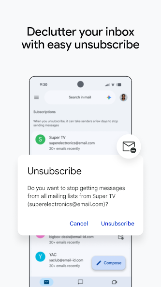
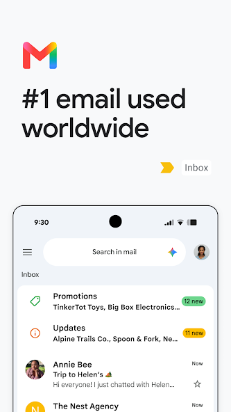

Gmail 不只是收邮件——新手五分钟从入门到用顺
你以为 Gmail 就是一个邮件盒子？其实它是把邮件、聊天、AI 写作全揉在一起的超级工作台。本文从零带你上手，装好就能用。
这篇能带你从完全不懂到用起来——不需要任何基础，跟着做就行。
它到底是干嘛的？（一个生活化类比）
把 Gmail 想象成你家的多功能收纳柜就对了。普通邮件客户端是那种固定格子的书柜——一本只能放一格，放了 A 格就不能放 B 格。但 Gmail 不一样：它给每封邮件都贴多个便签，一封同事发来的项目邮件，可以同时贴「工作」「项目Alpha」「待回复」三个便签，想从哪个角度找都能找到。
而且它还自带了几个隐藏的小助手：一个坐在你肩膀上帮你写邮件的 AI（智能撰写和智能回复），一个挂在柜子旁边可以直接聊天的即时通讯窗口（Chat），还有一个懂省电的管理员帮你管理什么时候拉新邮件（同步设置）。
说白了，Gmail 不是一个邮件工具——它是 Google 全家桶里的通讯中心。很多人下载它只是为了收 Gmail 邮件，却不知道用起来之后日常的工作邮件、个人沟通、快速回复全都能在一个应用里搞定——如果想了解它的完整能力，去 googlegmail官网 看看就清楚了。

五分钟上手（从下载到第一次发邮件）
真的不用五分钟，跟着下面四步走：
第一步：下载安装。 应用商店搜「Gmail」，图标是那个红加白的信封，直接点安装就行。不想在应用商店等更新的，也可以从 googlegmail下载 拿最新安装包。装好打开，第一次启动会让你登录 Google 账户——没有的话当场注册一个，手机号就能绑。
第二步：添加账户。 打开后如果只有一个账户就直接用；如果有多个邮箱（比如公司邮箱也是 Gmail 体系的），点左上角菜单拉到底，选「设置」→ 「添加账户」，跟着引导走。Gmail 支持同时登好几个账户，切换起来很方便。
第三步：写第一封邮件。 右下角那个大大的蓝色铅笔图标（或者手机上是悬浮按钮）就是「撰写」。点进去填收件人、主题，正文随便写点什么发给自己测试一下。发送后切到「已发送」文件夹确认一下——能在那儿看到就说明整个流程通了。
第四步：看看收件箱布局。 默认是「优先收件箱」，Gmail 会自动把它觉得重要的邮件顶上面，促销、社交邮件分门别类放在下面的标签里。第一次看可能觉得分类多了点，但用几天你会发现垃圾邮件真的被过滤得很干净。

到这儿就够了——你已经能用 Gmail 正常收发邮件了。接下来是让它真正好用起来的部分。
上手后先玩这三个功能
刚装好先别被菜单里一堆选项吓到，先把这三个练熟，日常效率至少翻一倍。
功能一：智能撰写——AI 在你打字时补全句子
打开一封要回复的邮件，在正文里敲几个字试试。你会发现光标后面慢慢冒出来一段灰色的字——那就是 Gmail 的智能撰写（Smart Compose）在猜你接下来想说什么。按一下 Tab 键（手机上轻点灰色文字），整段就自动帮你补完了。
比如你打了「好的，我看一下」，它可能会自动补「——预计今天下午给你回复」；你打了「谢谢」，它可能补「上次的资料很有帮助」。这意味着什么？意味着 Gmail 在学习你的语气——你用得越多，它猜得越准，写邮件的速度也越快。
如果猜得不准，不用按 Tab 就行，它不会硬塞给你。想关掉也很简单：设置 → 账户设置 → 常规 → 把「智能撰写建议」关掉。
功能二：标签管理——给你的邮件贴多个便签
这是 Gmail 最灵魂的功能，也是和其他邮件客户端最大的区别。普通文件夹是「一封邮件只能放一个格子」，而标签（Label）是「一封邮件可以同时贴 N 个便签」。
创建标签很简单：左上角菜单 → 滚到「所有标签」区域 → 点「创建标签」，输入名字（比如「工作待办」），保存就好了。想给一封邮件加标签，打开邮件 → 右上角三个点 → 「标签为」→ 勾选你想要的标签 → 确定。
我个人的习惯是用颜色来区分紧急程度：红色标签 = 必须处理，橙色 = 待回复，绿色 = 已归档参考。你会发现标签后面还会显示未读数量，扫一眼就知道哪个分类里有新邮件堆着。
控制在 5~15 个标签最舒服——太多了反而找不到，太少了又起不到分类提醒的作用。
功能三：同步设置——让邮件推送不烧流量不费电
装好之后默认就会自动推送新邮件了，但你可以稍微调一下让它更省心。打开设置 → 账户设置，找到「要同步的邮件天数」这个选项，默认是 30 天。如果你手机存储空间紧张，改成 7 天或 14 天就行——旧邮件还在 Google 服务器上，联网的时候照样能搜能看，只是不下载到本地了。
再往下翻，有个「仅通过 Wi-Fi 自动下载附件」，强烈建议打开。这样移动数据下新邮件只下载文字，附件等连上 Wi-Fi 才自动补，省流量效果很明显。
最后检查一下「同步 Gmail」这个总开关是不是开着——有时候系统省电模式会偷偷把它关掉，导致收不到推送。如果发现通知延迟，先去手机系统设置里把 Gmail 的电池限制改成「不限制」，比重启手机还管用。同步、标签、智能撰写这些功能的详细参数，去 googlegmail文档 里都能查到。
小白的三个常见疑问
Q1：智能撰写会不会把我打了一半的内容泄露出去？
别担心。Gmail 的智能撰写是在你自己的设备本地处理的，输入的文字不上传到 Google 服务器，这是隐私设计的一部分。它学习你的语气也是基于本地的输入习惯，不会把你写了一半的邮件内容发到云端。
Q2：推送有时候收不到怎么办？
先按上面说的检查三个地方：账户设置里的「同步 Gmail」总开关、手机系统的后台数据权限、电池省电限制。如果这三个都没问题，再确认一下 Google Play 服务没被禁用——有些国产手机会把它当成不必要的后台服务杀掉，关掉之后 Gmail 就没法正常推送了。
Q3：标签太多会乱吗？
会的。建议控制在 5~15 个之间，用颜色编码来辅助识别就够了。记住一个原则：标签是视觉提醒，不是搜索工具。Gmail 自带的搜索比翻标签快得多，你真正需要的是一眼扫过去就知道哪些标签里有未读邮件，而不是靠标签一层层找历史邮件。
以上就是 Gmail 新手入门的核心玩法——其实就四步上手、三个常用功能、三个高频问题。真正把它用好之后你会发现，原来收邮件也可以不那么累。
如果你想深入挖掘更多 Gmail 的玩法，比如和 Google Chat 集成、用 Gemini AI 直接帮你写完整邮件，那就是进阶路线了。Gmail 这套产品生态里藏的东西远不止收个邮件这么简单，慢慢探索，每用一周都会发现点新东西。顺带提一句，这套资料在 GitHub、Gitee、GitCode 三个平台上都有同步维护，国内访问选哪个都方便。